Her music
Tell Me How You Want ItMagdalena
Spotify → Out nowTell Me How You Want ItMagdalena
Beatport → 2026Mountains Of Es Cubells ReworkRSVP for the exclusive VIP stream and download
RSVP → ▶XXX BehaviorOriginal · Siona Records · 2025
Watch → ▶Think About You All The TimeExtended Club Version
Watch → ▶ElephantzOriginal Mix
Watch → ▶Bear's BackOriginal Mix
Watch → ▶NautilusOriginal Mix
Watch → ▶RadialisOriginal Mix
Watch → ▶Should I StayOriginal Mix
Watch → ▶Moby · Why Does My Heart Feel So BadMagdalena Remix
Watch → ▶Nicole Moudaber · The Sun at MidnightMagdalena Remix
Watch → ▶Hot Since 82 · TherapyMagdalena Remix
Watch → ▶Dave Seaman · Donkey EngineMagdalena Remix
Watch → ▶Innellea · CollapseMagdalena Remix
Watch → ▶BURAK · MaiaMagdalena Remix
Watch → ▶Joan Retamero · MagnusMagdalena Remix
Watch → ▶Uncloak · HollowMagdalena Remix
Watch → ▶NORR · Can't StandMagdalena Remix
Watch → ▶Brlee · VisionsMagdalena Remix
Watch → ▶David Christopher · ShoutMagdalena Remix
Watch → ▶Lessons · Double or NothingMagdalena Remix
Watch → ▶Ida Engberg · AbatakaMagdalena Remix
Watch → ▶Marc Houle · You Go OutMagdalena Remix
Watch →Live & mixes
Live sets · YouTube
 Live at La Estación, Córdoba · 2025
Live at La Estación, Córdoba · 2025
 La Estación, CórdobaLive · 2025 · 1h 34m
La Estación, CórdobaLive · 2025 · 1h 34m
 External The Bow, ArgentinaExclusive set · 1h 36m
External The Bow, ArgentinaExclusive set · 1h 36m
 Parque de las Luces, MedellínLive · 2025 · 1h 25m
Parque de las Luces, MedellínLive · 2025 · 1h 25m
 La Estación, CórdobaFull set · 2h 23m
La Estación, CórdobaFull set · 2h 23m
 Ocaso FestivalSunrise set · 2023 · 2h 20m
Ocaso FestivalSunrise set · 2023 · 2h 20m
 Zamna Brasil · Laroc ClubSão Paulo · 54m
Zamna Brasil · Laroc ClubSão Paulo · 54m
 Ulter, Ain El SokhnaEgypt · 45m
Ulter, Ain El SokhnaEgypt · 45m
 Argentina 2024Recap · 3m
All videosHer channel→
Argentina 2024Recap · 3m
All videosHer channel→
Won't play? Open it on YouTube ↗
DJ mixes · SoundCloud
On the road 2026
From her own post · Summer into fall
MysticaSanta Maria, BR
PHOXXIHamburg, DE
Destino Five Ibiza · PachaIbiza, ES
Letsescape x NomadeBatroun, LB
Key Producciones & KeymoodCanelones, UY
Dos22Asunción, PY
Salón Amador & PerceptionMedellín, CO
Illusions & Nomade BeachUlcinj, ME
Brunch BCN · Nacar ClubBarcelona, ES
Hï IbizaIbiza, ES
Club AMKBA & ExternalBuenos Aires, AR
El ÁticoMendoza, AR
External & JonesMar del Plata, AR
Rarest ProduccionesSalta, AR
Track ClubBahía Blanca, AR
Show posters
Tap a poster to open it · download the original file
Argentina6 shows


Germany4 shows


Colombia2 shows


Brazil1 show

Cyprus1 show

Ecuador1 show

Indonesia1 show

Serbia1 show


United Kingdom1 show

United States1 show

The artist
About the artist
Magdalena is a DJ, producer and promoter from Hamburg, working in the city’s deep melodic, indie dance, techno and house scenes since she was fifteen.
She ran management, bookings and artist relations at the legendary EGO club, where she also played her first sets. Her music has come out on Diynamic, Mobilee, Kitball, Selador, Bedrock, Crosstown Rebels, Knee Deep In Sound, Anjunadeep and Mood, and “Should I Stay” on the 10 Years of Diynamic compilation (2016) still defines her sound: emotional, deep, and made for the dancefloor.
Her SHADOWS parties have travelled from Ibiza through Europe to North America, and her sets have reached Pacha and Amnesia in Ibiza, Watergate in Berlin, Melt, Tomorrowland and Sonus.
Press
 Interview · Nasty MagazineOutside the Box / Magdalena“On instinct, identity and the freedom to evolve.”A club owner before she was a DJ, a crowd reader before she was a producer: Magdalena on running Hamburg’s EGO and learning music from the other side of the booth.Read the interview →
Interview · Nasty MagazineOutside the Box / Magdalena“On instinct, identity and the freedom to evolve.”A club owner before she was a DJ, a crowd reader before she was a producer: Magdalena on running Hamburg’s EGO and learning music from the other side of the booth.Read the interview →
Tech & hospitality
Press photos
Move over the fan · wheel, drag or edges to slide · tap a photo to open it

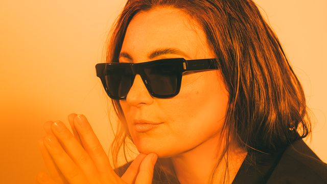
DJ MagPortrait
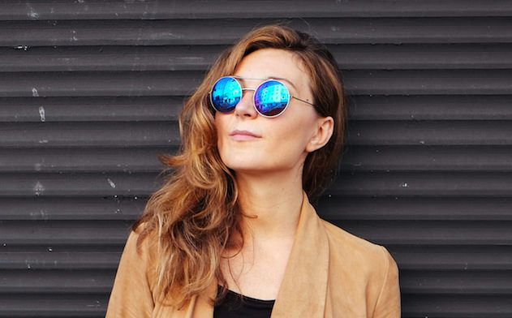
Attack MagazinePortrait
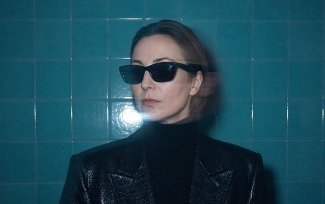
House MagPortrait
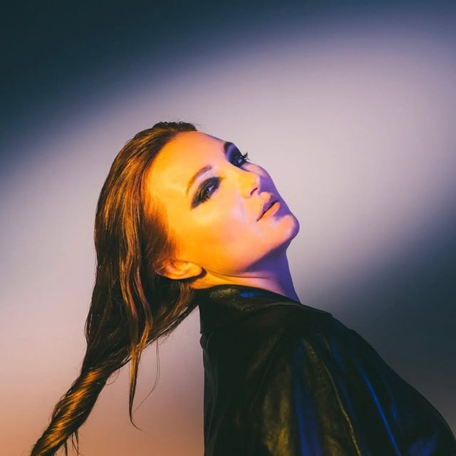
DistrictStudio portrait
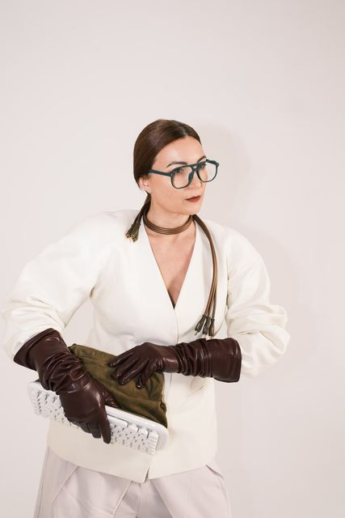
NastyStudio portrait
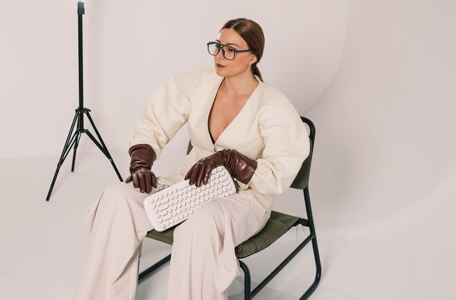
NastySeated in the studio InstagramProfile portrait

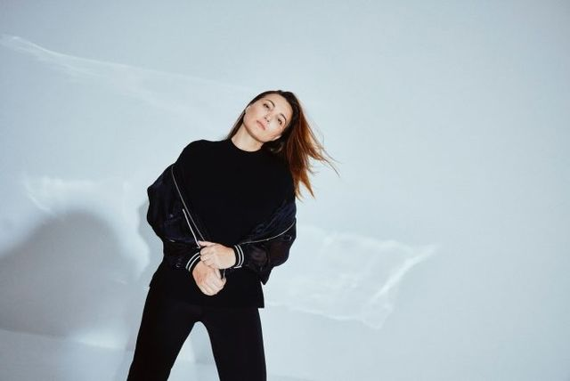
Mixmag EspañaEditorial portrait
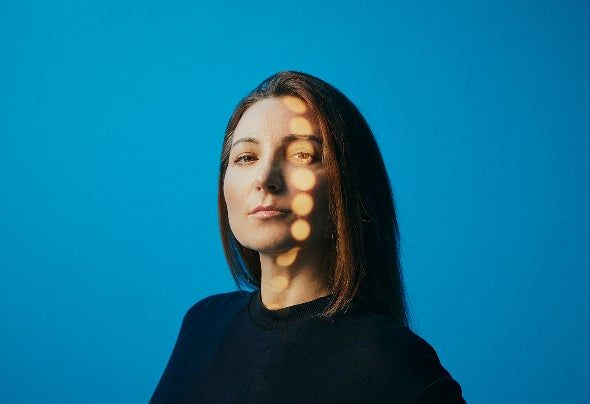
Nicho ExperiencePortrait
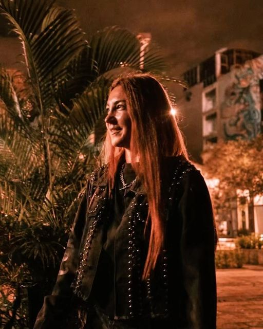
InstagramMedellín Rave JungleSHADOWS in the booth

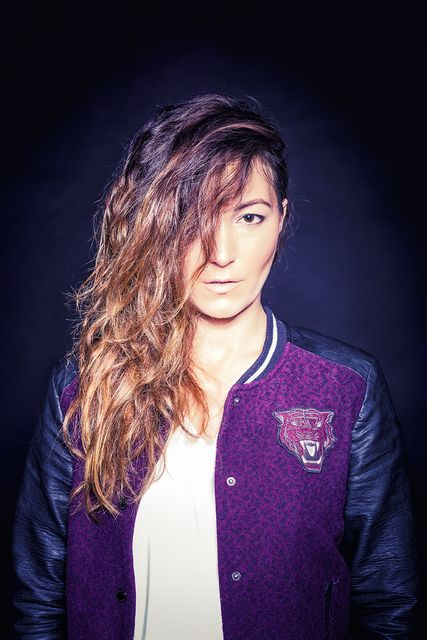
When We DipPortrait
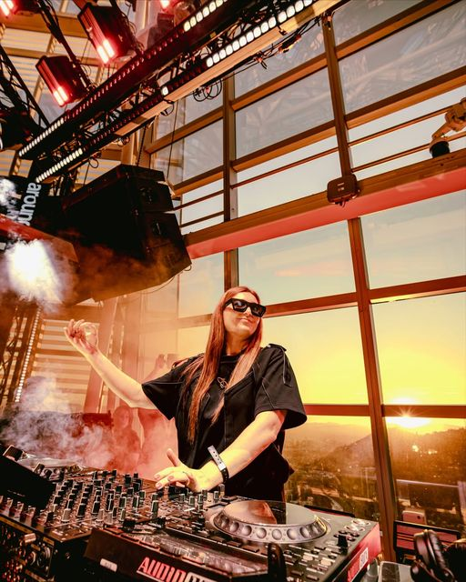
InstagramIn the booth
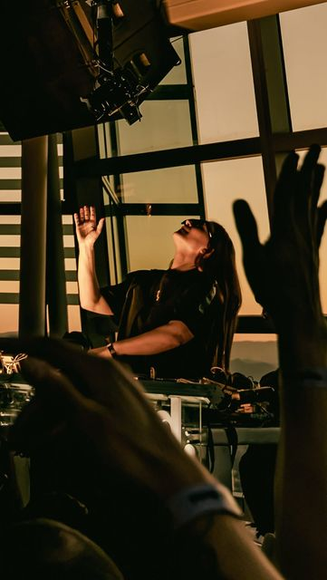
InstagramSet in Santiago
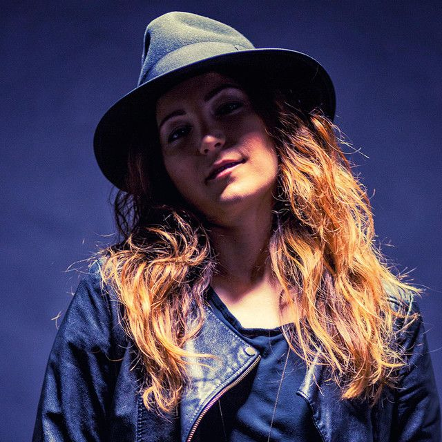
XceedPortrait
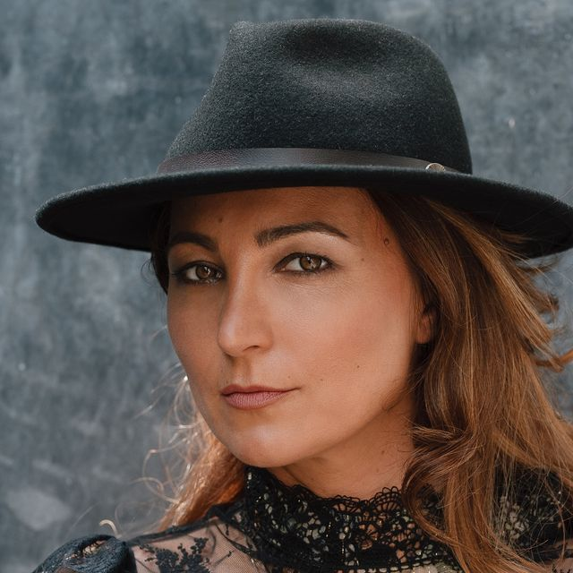
DiynamicPress portrait
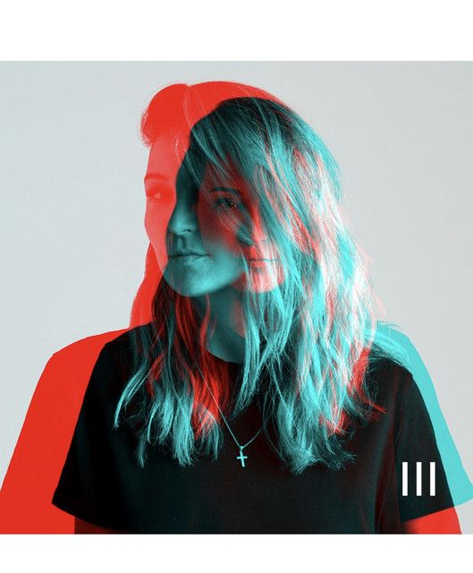
Booking Agent InfoEditorial portrait
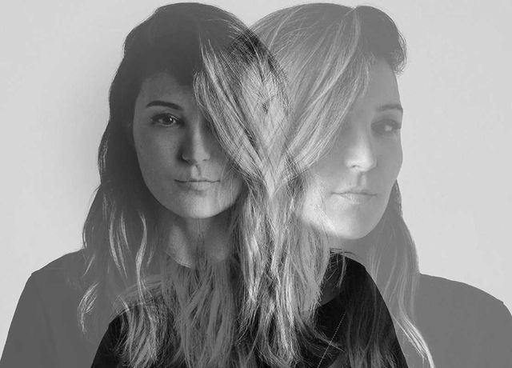
FPWSPress portrait
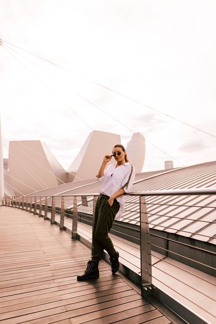
Mixmag BrasilView of the bridge
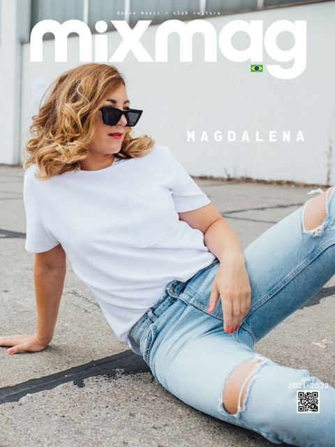
Mixmag BrasilEditorial cover LogoPNG · download
Let’s talk.
Booking: booking@metropole.agency · Magdalena at Metropole Talent
Promos: magdalena.promo@gmail.com
Tickets
Listen
Follow
More